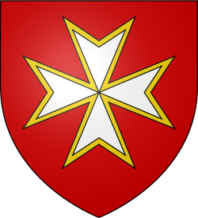
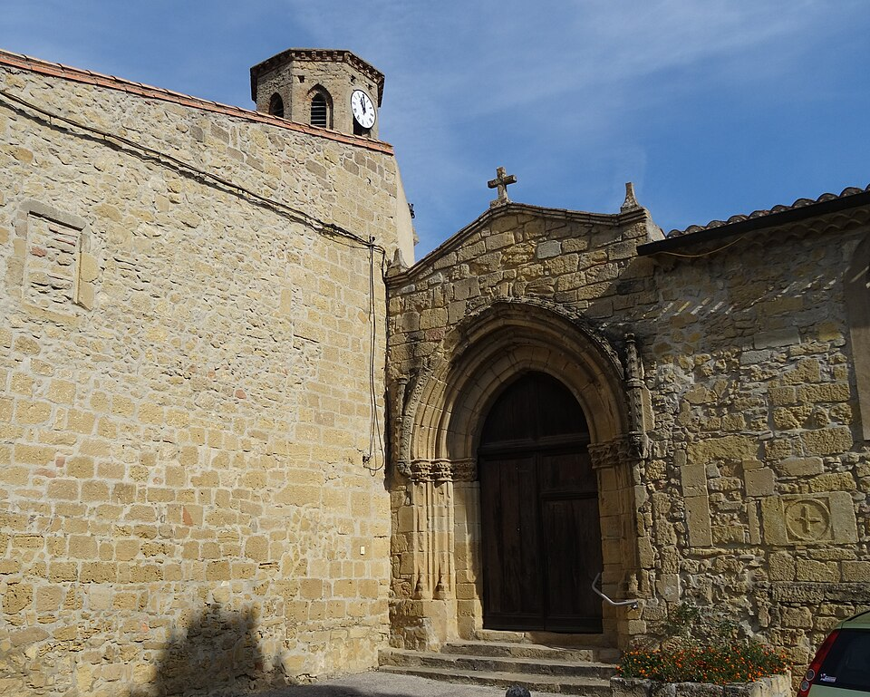

Mas-
Saintes-PuellesVillage du Lauragais et du Canal du Midi


⟹ Villes & Villages Emblématiques ⟸

Un nom issu d’une très ancienne tradition chrétienne. Mas-Saintes-Puelles aurait porté anciennement le nom de Recaudum. La tradition locale rattache son nom actuel à deux jeunes chrétiennes — les « puellae », les jeunes filles — qui auraient recueilli le corps martyrisé de saint Saturnin ou saint Sernin, premier évêque de Toulouse, au IIIe siècle. Flagellées puis bannies de Toulouse, elles se seraient réfugiées à Recaudum, où elles auraient mené une vie de prière avant d’être ensevelies près de l’église. Leurs reliques sont traditionnellement conservées dans le chœur de l’église et leur mémoire demeure associée à la fête locale.
Saint Pierre Nolasque et la tradition religieuse. Une autre tradition du village fait de Mas-Saintes-Puelles le lieu de naissance de saint Pierre Nolasque, fondateur au XIIIe siècle de l’ordre de Notre-Dame-de-la-Merci, voué au rachat des captifs chrétiens. Cette mémoire religieuse a marqué la vie associative locale : une société de secours mutuel créée en 1852 porta son nom, témoignage de ces formes de solidarité qui précédèrent les systèmes modernes de protection sociale.

Un foyer important du catharisme lauragais. Au Moyen Âge, le Mas se trouve au cœur du Lauragais, l’un des principaux territoires d’implantation du catharisme. Les sources inquisitoriales mentionnent de nombreux « bons hommes » et « bonnes femmes » ainsi que des familles liées à la dissidence. La famille de Raimond del Mas occupe une place particulière dans cette histoire ; Garsende, devenue veuve, est notamment associée à la communauté cathare.
1242 : la chevauchée d’Avignonet. Le village est directement lié à l’un des épisodes les plus célèbres de la fin de la résistance cathare. En mai 1242, un groupe de chevaliers et de partisans venus de Montségur traverse le Lauragais pour attaquer les inquisiteurs installés à Avignonet. Jordan du Mas et d’autres hommes du secteur se joignent à l’expédition, qui fait étape dans les environs avant le massacre d’Avignonet. Quelques années plus tard, en 1246-1247, les inquisiteurs Bernard de Caux et Jean de Saint-Pierre interrogent systématiquement de nombreux habitants du Lauragais, dont ceux du Mas, laissant une documentation précieuse sur la société locale.
La guerre de Cent Ans : le désastre de 1355. En 1355, le Prince Noir, Édouard de Woodstock, mène depuis l’Aquitaine anglaise une grande chevauchée à travers le Languedoc. Mas-Saintes-Puelles est pillé et incendié. Comme de nombreuses localités du Lauragais, le village doit se reconstruire après le passage de cette armée qui ravage bourgs, récoltes et réserves afin d’affaiblir le royaume de France.
Les guerres de Religion. Aux XVIe et XVIIe siècles, le Mas connaît une nouvelle période de violences. De 1573 à 1586, le village est occupé par les protestants. La tradition locale situe au lieu-dit La Planque une entrevue secrète entre Henri de Navarre, futur Henri IV, et Catherine de Médicis. En 1622, dans le contexte des dernières grandes révoltes protestantes du Midi, le village est de nouveau incendié, cette fois par l’armée royale de Louis XIII sur ordre du Parlement de Toulouse. En 1627, après le combat de Souilhe, des troupes protestantes se replient vers Mazères par un itinéraire resté dans la mémoire locale sous le nom de « chemin des Huguenots ».
Un village plusieurs fois reconstruit. Les destructions successives de 1355 et 1622, auxquelles s’ajoutent les troubles religieux, expliquent la disparition d’une partie importante du bâti médiéval. Le village actuel est donc le résultat de reconstructions, d’adaptations et d’extensions successives. Cette histoire mouvementée est essentielle pour comprendre son patrimoine : derrière l’apparence paisible du bourg se cache un lieu qui fut à plusieurs reprises au contact direct des grands conflits du Midi.
1667-1681 : le chantier du Canal du Midi. La seconde moitié du XVIIe siècle ouvre une période totalement différente. Le gigantesque chantier du canal royal de Languedoc, futur Canal du Midi, transforme le Lauragais. Entre 1667 et 1681, Mas-Saintes-Puelles se trouve au cœur des travaux. Pierre-Paul Riquet installe, selon la tradition communale, son cabinet de travail au domaine de Barrié. Terrassements, ouvrages hydrauliques, chemins de service et circulation de milliers d’ouvriers bouleversent temporairement la région, puis le canal modifie durablement les échanges entre Toulouse et la Méditerranée.
Révolution, agriculture et société rurale. Pendant la Révolution française, la commune prend provisoirement le nom de « Mas-Union », conformément à la volonté de supprimer les références religieuses de nombreux toponymes. Aux XIXe et XXe siècles, la vie économique demeure dominée par les grandes cultures du Lauragais, la vigne, l’élevage et les activités rurales. La société de secours mutuel fondée en 1852 illustre l’organisation communautaire du village à l’époque contemporaine.
Une mémoire exceptionnellement dense. Mas-Saintes-Puelles réunit ainsi sur un territoire restreint plusieurs grandes pages de l’histoire méridionale : christianisation ancienne et traditions hagiographiques, catharisme, Inquisition, guerre de Cent Ans, guerres de Religion, construction du Canal du Midi, Révolution et transformations agricoles. Cette accumulation d’événements explique la forte identité historique d’un village dont le paysage reste étroitement lié au Lauragais et au canal.